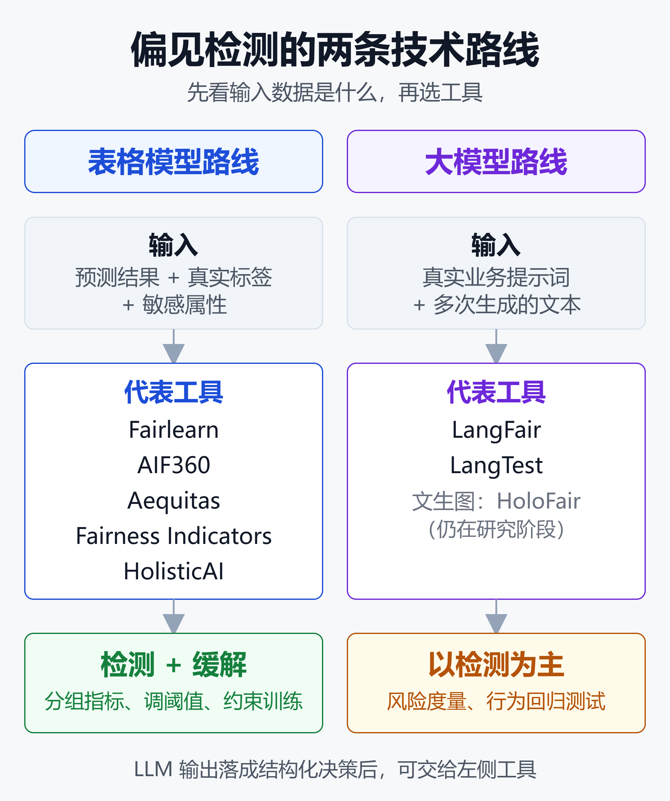
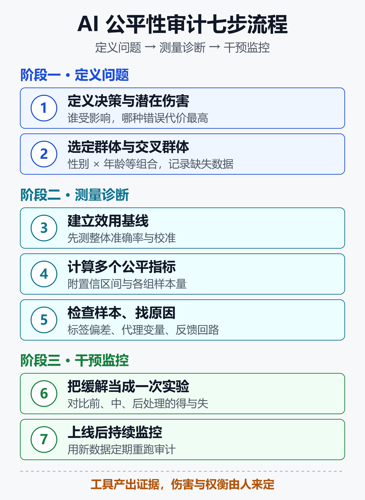

AI 公平性工具全解析：7 款开源偏见检测框架选型指南（2026）
一个信贷违约模型，整体准确率 92%，看起来可以上线了。但把测试集按性别拆开一看，某一组申请人的假阴性率明显更高：同样按时还款的人，这一组更容易被模型判成「高风险」而被拒。
这不是虚构场景，而是微软 Fairlearn 官网拿来做示范的标准案例。它说明了一件事：平均指标会把不公平藏起来，只有按群体拆开看，问题才会浮出水面。
大模型让这个问题更复杂。让文生图模型「画一个人」，它常常压倒性地输出年轻白人面孔；提示词换成「一位专业人士」，这种倾斜还会更明显（ICML 2026 论文 HoloFair 的观察）。对话模型也一样：只改提示词里的一个人口属性，回答就可能变样。
2026 年，偏见检测已经从学术话题变成了工程和合规问题。欧盟 AI Act 要求高风险系统缓解歧视风险，国内已有 490 余款大模型完成网信办备案。这篇文章梳理 7 款仍然值得在新项目里用的开源工具，讲清它们各管什么、坑在哪，以及怎么把它们串成一套能落地的审计流程。
一、偏见检测到底在测什么
在选工具之前，得先搞清楚一个反直觉的事实：公平性不是一个分数。学界和工业界常用的公平性定义至少有四种，它们回答的是不同的问题。
四种常见的公平性定义
- 统计均等（Demographic Parity）：各群体被模型「选中」的比例是否接近，比如贷款批准率。
- 机会均等（Equal Opportunity）：真正合格的人里，各群体被正确识别的比例（真阳性率）是否接近。
- 均衡几率（Equalized Odds）：在机会均等基础上，再要求假阳性率也接近。
- 校准（Calibration）：模型给出的「违约概率 30%」，对每个群体是否都意味着真实的 30%。
为什么它们会互相打架
当各群体的真实基础比例不同时，这几个定义在数学上往往无法同时满足。你把批准率拉平了，错误率可能就不平了；你把分数校准好了，选择率可能又拉开了。
所以正确的顺序是：先想清楚真实伤害是什么，再选指标，而不是反过来。分配类问题（谁拿到贷款、谁进面试）看选择率；错误代价不对称的问题（漏诊、误判欺诈）看假阴/假阳差距；分数直接驱动决策时，校准最重要。
检测与缓解是两回事
偏见检测是「测量差异、定位原因」；偏见缓解是「改动系统」，包括重新加权训练数据、在训练时加公平约束、训练后按群体调阈值，或者干脆重新设计流程、加人工复核。
每一次缓解都必须重新评估：准确率掉了多少、校准有没有变差、交叉群体（比如「年长女性」）有没有出现新问题。
二、2026 工具全景：两条技术路线
Turing Post 在 2026 年 8 月更新了一份开源公平性工具清单，核对了各项目的仓库、文档、发布记录和许可证。筛完之后留下 7 款，可以清楚地分成两条路线。

如上图，左边是面向传统机器学习（分类、回归、二元决策）的工具，核心输入是「预测结果 + 真实标签 + 敏感属性」；右边是面向大模型应用的工具，核心输入是「提示词 + 生成文本」。前者大多同时能检测和缓解，后者目前以检测和行为测试为主。
| 工具 | 最适合 | 能否缓解 |
|---|---|---|
| Fairlearn | 表格模型默认首选 | 能 |
| AIF360 | 算法最全研究库 | 能 |
| HolisticAI | 综合可信度审计 | 能 |
| Aequitas | 二元决策透明审计 | 通过 Flow |
| Fairness Indicators | TFX 大规模切片 | 不能 |
| LangFair | LLM 用例级评估 | 不自动 |
| LangTest | NLP/LLM 行为测试 | 部分 |
许可证方面，7 款都是宽松协议：Fairlearn 和 Aequitas 是 MIT，AIF360、Fairness Indicators、LangTest 是 Apache 2.0，LangFair 主体 Apache 2.0，HolisticAI 的许可元数据存在冲突（后面细说）。
三、表格模型路线：5 款工具
Fairlearn：大多数项目的起点
Fairlearn 由微软发起，现在是社区驱动的开源项目，2026 年 6 月发布了 0.14.0。它的定位很清楚：在 scikit-learn 风格的工作流里，把分组指标和缓解算法做到顺手。
核心是 MetricFrame：你给它任意指标函数、预测结果和敏感属性，它就按组拆开算，并直接给出组间差距。
from fairlearn.metrics import MetricFrame
from fairlearn.metrics import selection_rate
from sklearn.metrics import recall_score
mf = MetricFrame(
metrics={"recall": recall_score,
"sel_rate": selection_rate},
y_true=y_test,
y_pred=y_pred,
sensitive_features=df_test["sex"],
)
print(mf.by_group) # 各组指标
print(mf.difference()) # 组间最大差距
缓解有两条路：一是 reductions 方法，在训练时加公平约束；二是 ThresholdOptimizer，训练后按群体调阈值（前提是业务和法规允许按群体区别处理）。
from fairlearn.postprocessing import (
ThresholdOptimizer,
)
to = ThresholdOptimizer(
estimator=model,
constraints="equalized_odds",
prefit=True,
)
to.fit(X_train, y_train,
sensitive_features=A_train)
y_fair = to.predict(
X_test, sensitive_features=A_test)
要注意的是，Fairlearn 只做群体公平。群体怎么定义、样本够不够、交叉群体怎么看、上线后怎么监控，这些它不替你决定。它也不是评估 LLM 输出的工具。
AIF360：算法目录最全，但要隔离环境
AI Fairness 360 最早由 IBM Research 在 2018 年发布，现在托管在 Trusted-AI 组织下，同时支持 Python 和 R。它是这 7 款里方法覆盖最广的：数据级和模型级指标，外加前处理、训练中、后处理三类缓解算法。
重加权（Reweighing）、学习公平表示、对抗去偏、均衡几率后处理、reductions……想在同一个生态里横向比较多种方法，AIF360 最合适。它的教学 Notebook 也很适合用来理解「换一个公平定义，结论会怎么变」。
坑在依赖上。仓库 README 写支持 Python 3.10–3.13，但 setup.py 还标着 0.6.1、声明 Python 3.8–3.11，并把 scikit-learn 锁在 1.6 以下。实际使用时建议单独开一个锁版本的虚拟环境，只装需要的 extras。
Aequitas：给业务方看的审计报告
Aequitas 出自原芝加哥大学的数据科学与公共政策中心，最初就是为政府和公共部门的决策系统做审计设计的。
它的输入很简单：分数、标签、群体属性。输出是一份按群体列出选择率、假阳性率、假阴性率、真阳性率等差异的审计报告。相比一堆零散的 Notebook 计算，这种格式更容易拿去和法务、业务方沟通。
1.0 版加入了 Aequitas Flow，可以实验公平性方法并可视化「性能与公平」的权衡；2026 年 2 月发布的 1.1.0 支持 Python 3.10–3.13。它的甜区是结构化的二元决策，排序、视觉、自由文本生成需要别的工具。
TensorFlow Fairness Indicators：已在 TFX 上的团队
Fairness Indicators 基于 TensorFlow Model Analysis，擅长在大规模数据上按用户定义的切片计算和可视化指标，支持置信区间、多阈值对比、候选模型与基线对比。2026 年 7 月发布了 0.52.0。
两点提醒：Google 文档至今仍把它标为 Beta；它只做评估和可视化，不做缓解。如果你的技术栈本来不在 TFX 上，为它引入整套依赖不太划算。
HolisticAI：把公平放进更大的可信度审计
HolisticAI 把工具包分成五个模块：偏见、可解释性、鲁棒性、安全、效能，可以按需安装。偏见模块覆盖分类、回归、聚类和推荐系统，并带缓解方法，适合做比「只看公平」更宽的模型风险评审。
两个风险点：PyPI 上最新版 1.0.14 发布于 2025 年 3 月，更新节奏偏慢；仓库根目录 LICENSE 是 Apache 2.0，而 pyproject.toml 和 PyPI 元数据写的是 MIT。要二次分发的团队，最好确认自己用的版本到底适用哪份声明。
四、大模型路线：从静态基准到用例级评估
表格模型的公平性研究已经有十年积累，大模型这边才刚起步。一个核心分歧是：用公开基准测模型，还是用自己的真实提示词测应用？
LangFair：自带提示词，测你自己的用例
LangFair 由美国医疗企业 CVS Health 开源，2026 年 1 月发布 0.8.0。它的核心思路叫 Bring Your Own Prompts（BYOP）：与其假设某个静态基准能代表你的业务，不如直接用用户真实会遇到的提示词，反复生成、统计输出。
它的设计完全基于输出，不需要访问模型权重或内部激活，因此闭源 API 模型也能测。它兼容 LangChain 接口，覆盖文本生成、摘要、推荐、分类等场景，并附了一套「按用例挑指标」的决策框架。
适合的场景：客服机器人、智能助手、摘要工具这类生成式产品。要注意生成结果是随机的，必须跑足够多的样本、记录提示词和采样参数、报告不确定性，并人工抽查例子。LangFair 只测量风险，不会自动帮你去偏。
LangTest：一套覆盖 60 多种测试的行为测试框架
LangTest 由 PacificAI 维护，2026 年 8 月 17 日发布 2.8.0，要求 Python 3.12 及以上。它能生成并运行 60 多种测试，分布在偏见、公平、表征、鲁棒性、准确性等类别。
除了传统 NLP 任务（实体识别、翻译、文本分类），它也覆盖 LLM 的问答、毒性、事实性、谄媚（sycophancy）、摘要等测试。它还能根据失败用例为部分模型增强训练数据，但这不是通用去偏方案，生成的每条数据都要再验证。
LangTest 比 LangFair 覆盖面更广，但在严格的群体公平定义上没那么专精。比较合理的用法是：用它把「行为要求」变成可重复跑的测试用例，接进 CI；涉及具体决策的公平分析，还是交给 Fairlearn 或 AIF360。
一个衔接技巧：把 LLM 输出变成结构化决策
很多大模型应用最后会落到一个结构化决策上，比如「简历是否进入下一轮」「工单是否升级」。这时可以把 LLM 的判断结果当作 y_pred，配上人工标注和群体属性，直接用 Fairlearn 算分组指标。
这样一来，大模型应用也能用上表格路线的成熟工具和指标体系，不必全部依赖生成式评估。
文生图：学术界的新前沿
图像生成的偏见检测还主要停留在研究阶段。ICML 2026 的 HoloFair 构建了面向公平性的大规模数据集和属性分类器，提出多属性分组偏见指数（MGBI）来衡量生成结果的多样性和条件偏见。
它还提出了 Fair-GRPO，用强化学习的多目标奖励函数调整生成分布。论文在 SD3.5-Medium 上的实验显示，这种方法在保持画质的同时明显改善了多维公平性。目前还没有成熟的工程化工具，做文生图产品的团队值得关注这条线。
五、这些老工具，新项目别再选了
如果你是从 2020 年前后的教程入门的，可能还记得下面这些名字。它们仍有参考价值，但不建议作为 2026 年新项目的默认选择。
- What-If Tool：工作流围绕 TensorBoard、TensorFlow Estimator、AI Platform Prediction 这一代老接口设计。
- FairTest：公开安装说明仍然面向 Python 2.7。
- FAT Forensics、Themis-ML：发布和依赖都停留在较早的版本。
- 微软 Responsible AI Toolbox：
raiwidgets最后一版 0.36.0 发布于 2024 年 7 月，其公平性面板底层本来就是 Fairlearn。
老用户可以继续用，但新团队要预期不少兼容性工作。更省事的做法是直接用 Fairlearn 替代。
六、一套能落地的七步审计流程
工具只是零件。真正决定审计质量的，是你怎么把它们串起来。下面这套流程综合了 Turing Post 指南和 Fairlearn「公平是社会技术问题」的理念。

如上图，七步分成三个阶段：前两步定义问题，中间三步测量与诊断，最后两步干预与监控。其中第 1 步和第 7 步最容易被跳过，也最关键。
第 1 步：定义决策与潜在伤害
写清楚：谁受影响、哪个结果重要、哪种错误代价最高。贷款场景里「好人被拒」和「坏人通过」的代价完全不同，这直接决定你看假阴性还是假阳性。
第 2 步：选定群体与交叉群体
不要只看单一属性。在样本量允许时检查组合，比如性别 × 年龄段。同时记录哪些人口数据缺失或不可靠，这本身就是审计结论的一部分。
第 3 步：建立效用基线
先测整体准确率、校准、排序质量或任务成功率，再做组间比较。没有基线，就没法判断后面的缓解到底付出了多少代价。
第 4 步：计算多个相关公平指标
同时算几个与伤害相关的指标，并附上置信区间和各组样本量。一个基于 30 条样本算出来的巨大差距，不是可靠证据。
第 5 步：检查样本、找原因
翻具体例子，排查标签偏差、采样缺口、代理变量（邮编往往是种族的代理）、阈值效应、反馈回路，以及部署流程本身的问题。很多偏见来自数据和流程，不在模型里。
第 6 步：把缓解当成一次实验
对比前处理、训练中、后处理几类方案，量化哪些指标改善了、哪些变差了。改善一个公平指标可能让准确率下降，或让另一个指标恶化。
第 7 步：上线后持续监控
人群、政策、标签和模型行为都会漂移。定期用新数据重跑审计，跟踪真实世界的结果，而不只是离线指标。这一步可以和现有的可观测性平台结合，例如在 Langfuse 这类工具里按用户分组埋点。
七、合规视角：监管在要求什么
欧盟 AI Act：高风险系统的硬要求
欧盟 AI Act 的主要目标之一，就是缓解高风险 AI 系统在开发、部署和使用中的歧视与偏见。欧洲议会研究服务处的简报指出，为了识别和避免歧视，法案允许在满足隐私保护等条件时处理「特殊类别个人数据」（如种族、健康信息）。
这一点对工程团队很实际：没有敏感属性，就无法做分组公平检测。AI Act 在一定程度上给偏见检测开了数据使用的口子，但前提是有隐私保护措施。
2026 年又有两个变化。一是「AI 数字综合法案」（EU Regulation 1744/2026）于 7 月 27 日起适用，对 AI Act 的实施做了简化，并减少与其他法规的重叠。二是有欧洲民间机构指出，法案第 27 条的基本权利影响评估对私营招聘系统存在豁免，被称为「就业盲区」。
业界常用的量化门槛
工具只给数字，门槛要自己定。最常被引用的是源自美国就业领域的「五分之四规则」：弱势群体的选择率不应低于优势群体的 80%。
一份 2026 年的算法偏见审计基准报告进一步提出，各人口子群之间的错误率差异不超过 5 个百分点。这类数字可以作为内部红线的参考起点，但具体适用哪个标准，要结合所在司法辖区和行业规定，由法务来定。
中国：备案之外的公平性治理
国内的生成式 AI 规模增长很快：公开报道显示，截至 2025 年 9 月，已有 490 余款大模型完成网信办备案，生成式 AI 产品用户规模达 2.3 亿。
学界的讨论指出，当前算法歧视治理主要依赖法规约束、企业伦理审查这类「后置外部治理」。对企业来说，更主动的做法是把偏见检测前置到开发流程里：训练前查数据、上线前跑审计、上线后持续监控，而不是等出了问题再补。
八、选型速查：按场景对号入座
- 大多数 Python 分类或回归项目：从 Fairlearn 开始。
- 需要横向比较多种学术缓解算法：用 AIF360，放在锁版本的独立环境里。
- 要把公平放进更宽的可信度评审：评估 HolisticAI，并确认许可声明。
- 需要给业务方或监管看的二元决策审计报告：用 Aequitas。
- 评估管线已经跑在 TensorFlow/TFX 上：用 Fairness Indicators，留意 Beta 状态。
- 测某个具体 LLM 应用的公平性：用 LangFair，配真实提示词和多次采样。
- 要把 NLP/LLM 行为要求变成可重复的测试：用 LangTest 接进 CI。
安装时建议锁定版本，避免依赖漂移导致结论不可复现：
pip install fairlearn==0.14.0
pip install aequitas==1.1.0
pip install langfair==0.8.0
小结
AI 公平性工具在 2026 年已经相当成熟，但它们的角色很明确：产出技术证据，而不是颁发「公平证书」。没有任何一个库能证明系统合规或不存在歧视，这是所有主流工具文档都反复强调的一点。
路线上，表格模型选 Fairlearn 起步、AIF360 做方法对比、Aequitas 出审计报告；大模型应用用 LangFair 测真实用例、LangTest 做回归测试。老一代的 What-If Tool、FairTest 等可以退役了。
真正拉开差距的不是选了哪个库，而是流程：先定义伤害再选指标，按群体和交叉群体拆开看，把缓解当实验来做，上线后持续监控。哪些伤害重要、保护谁、接受哪种权衡，这些是产品、法务和治理层面的决策，代码替你做不了。
免责声明
本文基于公开资料整理，用于技术分析与信息分享，不构成法律合规意见或技术选型建议。文中工具版本号、许可证信息截至 2026 年 8–9 月，可能随时变化；监管条款与量化门槛请以官方文本和专业法律意见为准。
参考来源
- Turing Post —— Detect & Mitigate AI Bias: 7 Open-Source Tools (2026)
- Fairlearn —— 官方网站与信贷违约用例
- PyPI —— fairlearn 项目页
- arXiv —— Fairlearn: Assessing and Improving Fairness of AI Systems
- GitHub —— Trusted-AI/AIF360 官方仓库
- IBM Research —— Introducing AI Fairness 360
- AIF360 文档 —— Getting Started
- GitHub —— cvs-health/langfair 官方仓库
- PyPI —— langfair 项目页
- arXiv —— Use-Case-Specific Bias and Fairness Evaluation for LLMs
- ICML 2026 —— Unified T2I Fairness Evaluation and Fair-GRPO Debiasing
- arXiv —— HoloFair: Unified T2I Fairness Evaluation
- PMLR —— 面向医疗研究数据集的公平感知机器学习偏见检测
- MDPI Information —— 用 Fairlearn 与 AIF360 分析视觉与 NLP 模型公平性
- 欧洲议会研究服务处 —— AI Act 与 GDPR 下的算法歧视
- 欧盟委员会 —— AI 监管框架
- Mayer Brown —— EU AI Act 新闻：AI 数字综合法案与新指南
- Equal Faith Europe —— AI Act 第 27 条的就业盲区
- Stanford Law —— 欧盟 AI Act 下高风险系统的算法偏见与歧视
- Philosopedia —— 2026 算法偏见审计基准报告
- 腾讯云开发者社区 —— 2025 年偏见审计工具的框架设计与实施指南
- 博客园 —— 国内 AI 平台与大模型备案数据（2.3 亿用户）
相关阅读
- 大模型评测全指南：从 MMLU、SWE-bench 到 Arena，读懂指标、排名与真实能力
- 从零搭建 LLM 安全护栏：开源工具选型 + 生产架构实战
- AI 幻觉责任链：从律师罚单到航司赔款，谁在为编造的政策买单
- 给大模型加一道隐私闸门：Presidio + LiteLLM 实战 PII 脱敏指南（2026）
- Langfuse实战：给AI Agent装上黑匣子——开源LLM可观测性平台完全指南
- AI Agent治理与可观测性：企业落地的隐藏成本
推荐搭配装备
善其事，利其器。以下硬件能最大化你的AI体验👇
🔗 通过以上链接购买可支持本站持续运营 🙏